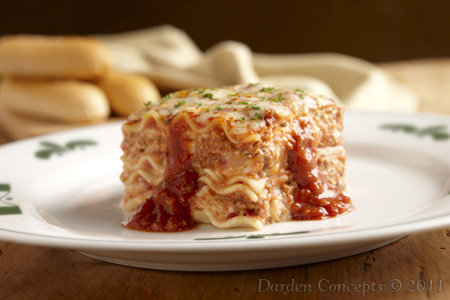

Lasagna

Description
Here is a classic, highly-rated recipe for traditional meat lasagna
that uses a rich meat sauce and a creamy ricotta cheese mixture.
Ingredients
For the meat sauce:
- 1 tbsp olive oil
- 1 lb ground beef
- 1/2 lb Italian sausage (casings removed)
- 1 medium onion, finely diced
- 2 cloves garlic, minced
- 24 oz (3 cups) marinara sauce (such as Rao's or a preferred brand)
- 1/4 cup dry red wine or beef broth (optional, for depth of flavor)
- 1 tsp dried basil leaves
- 1/2 tsp dried thyme
- Salt and black pepper to taste
For the Cheese Mixture:
- 15 oz ricotta cheese
- 1 large egg, lightly beaten
- 2 cups mozzarella cheese, shredded and divided
- 3/4 cup Parmesan cheese, freshly grated and divided
- 2 tsp Italian seasoning
- 1/2 tsp salt
For Assembly:
- 9 lasagna noodles (regular noodles, not no-boil)
Steps
- Prepare the meat sause
- Heat olive oil in a large pan or Dutch oven over medium heat.
- Add the ground beef, Italian sausage, and diced onion.
- Sauté for about 5 to 7 minutes until the meat is browned and the onions are translucent.
- Add the minced garlic and cook for another minute until fragrant. If using, stir in the red wine and cook until it has nearly evaporated.
- Stir in the marinara sauce, dried basil, thyme, salt,
and pepper. Bring the sauce to a simmer, then cover and cook for at least 5 minutes to allow the flavors to combine.
- Cook the Noodles
- While the sauce simmers, bring a large pot of lightly salted water to a boil. Add the lasagna noodles and cook until
al dente (firm to the bite) according to package directions. Drain the noodles and rinse them with cold water to prevent sticking.
- Prepare the Cheese Mixture
- In a large bowl, combine the ricotta cheese, beaten egg, 1.5 cups of the mozzarella cheese,
1/2 cup of the Parmesan cheese, Italian seasoning, and salt. Mix well.
- Assemble the Lasagna
- Preheat your oven to 375°F (190°C).
- Spread about 1 cup of the meat sauce across the bottom of a 9x13 inch baking dish.
- Arrange 3-4 lasagna noodles over the sauce, overlapping slightly if needed.
- Spread 1/3 of the ricotta cheese mixture over the noodles, then top with
approximately 1.5 cups of the meat sauce. Sprinkle with some of the remaining mozzarella and Parmesan.
- Repeat the layers two more times.
- Bake and Serve
- Top the final layer of noodles and sauce with the remaining mozzarella and Parmesan cheese.
- Cover the dish tightly with aluminum foil (spraying the underside with cooking spray can prevent sticking) and bake for 30 minutes.
- Remove the foil and continue baking for an additional 15 minutes, or until the cheese is golden and bubbly.
- Let the lasagna rest for 15-20 minutes before slicing and serving. This allows it to set and prevents it from falling apart.